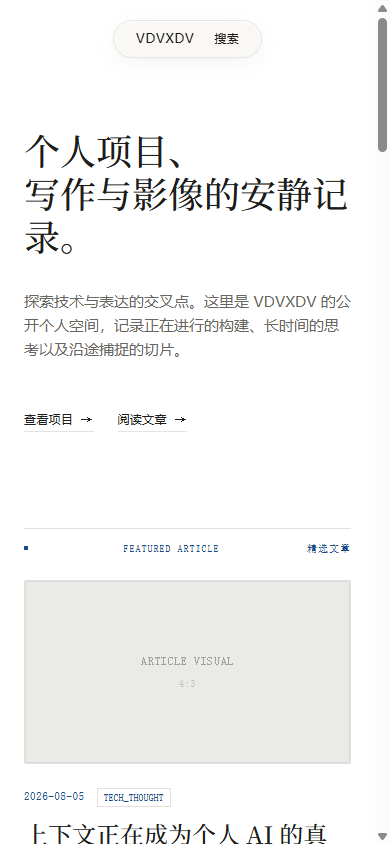

DEVELOPING
Morning
Radar
让每日信号成为可以追溯、阅读和继续判断的晨报。
PYTHON · LLM
GITHUB ACTIONS
- collect
- dedupe
- score
- brief
- static publish
REAL OUTPUT / 2026-08-15
CAPTURED

把真实输出、调试痕迹与未完成的边界放在同一张工作台上。每一行，按项目自己的证据生长。
ONE ROW IS A STAGE.
EACH PROJECT DECIDES
WHAT HAPPENS THERE.
DEVELOPING
让每日信号成为可以追溯、阅读和继续判断的晨报。
PYTHON · LLM
GITHUB ACTIONS
USABLE MVP
透明无边框 Windows 桌宠。拖动、眨眼与轻拍反馈构成它的状态语言。
PYSIDE6 · PILLOW
WINDOWS LOCAL APP
 STATE / IDLE
STATE / IDLE
USABLE LOCALLY / DEPLOYMENT PENDING
从内容模型到界面、搜索、RSS 与 QA 的个人出版系统。
ASTRO 7 · COLLECTIONS
SEARCH · RSS · SEO


USABLE v0.1 / UNOFFICIAL
一个强调权限边界、预览和回滚的诊断提示词与文档工具包。
VERSION-DEPENDENT
PROMPT / DOCUMENTATION
写入成功不等于修复成功。只有用户完成重启并验证新对话后，结果才成立。
FOUNDATIONS / LEARNING OUTPUTS
C CONSOLE GAMES / COMPLETED OUTPUTS
七种方块、10×20 场地、预览、分数、等级、落点投影与简易 wall kick。Snake、2048、井字棋和猜数字归在同一组学习输出里。
TETRIS · SNAKE · 2048 · TIC-TAC-TOE · GUESS NUMBER
HARDWARE TRACE / NO PHOTO
只记录源文件中确实存在的三个行为。